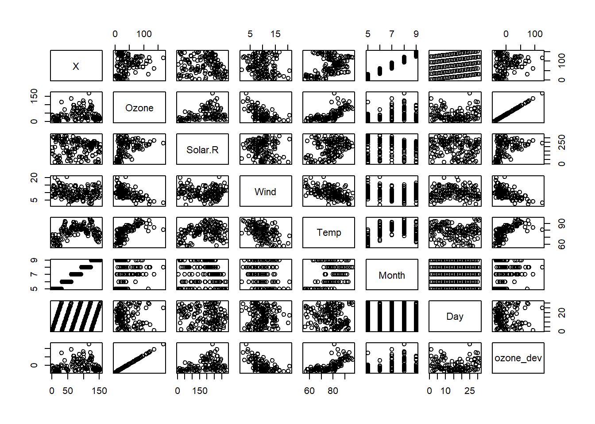
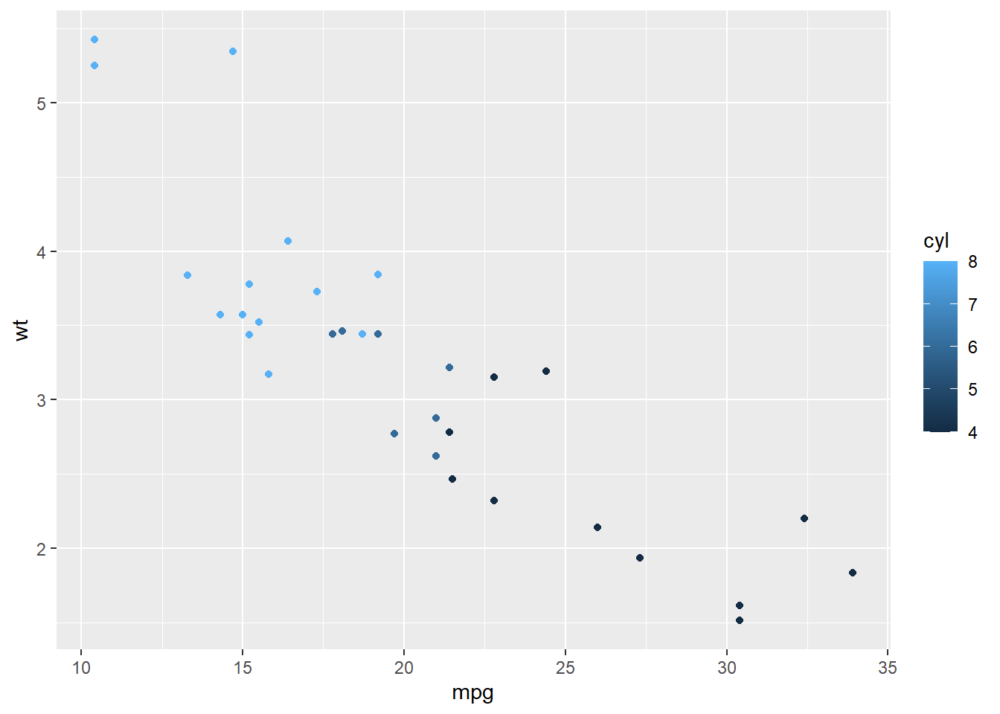
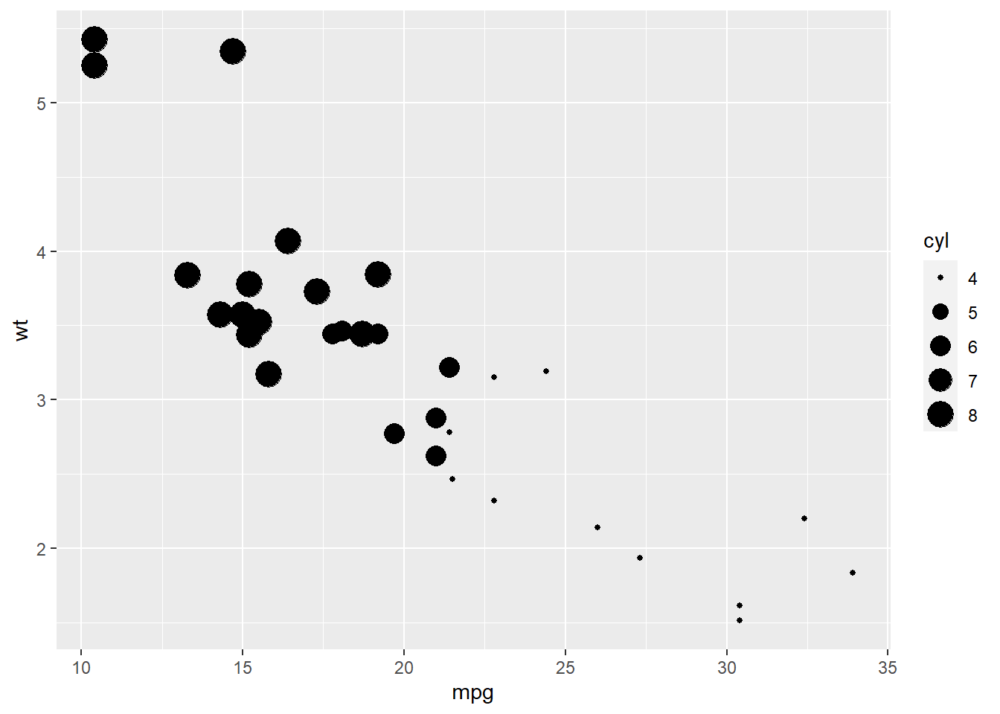
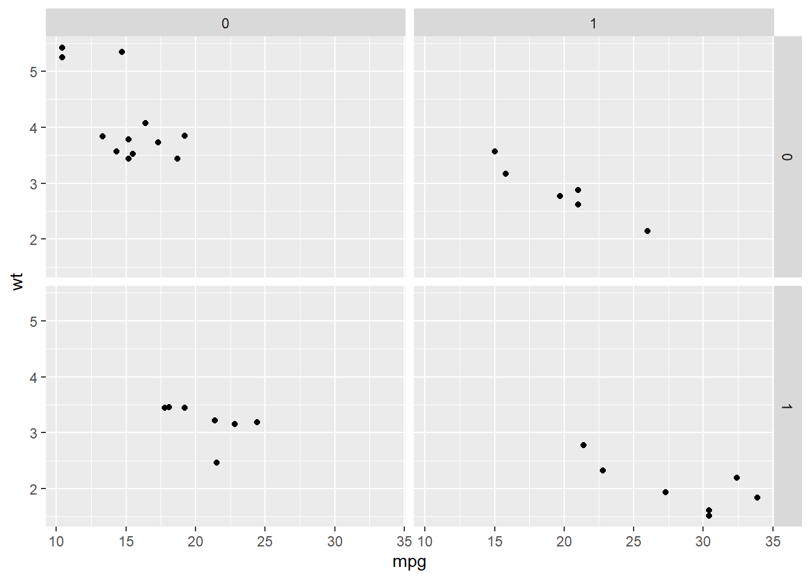

R基本操作
读取文件
write.csv(iris, "dtf.csv")dtf <- read.csv("dtf.csv")
#利用数据框读入
df1 <- data.frame(age = c(12,33,45),gender=c("f","m","f"))对文件进行基本计算
round(3.14,digits=2)## [1] 3.14signif(0.04300, digits = 3)## [1] 0.043#周长
c(10, 20, 30, 40 ,60)*2*pi## [1] 62.83185 125.66371 188.49556 251.32741 376.99112#面积
c(10, 20, 30, 40, 60)^2*pi## [1] 314.1593 1256.6371 2827.4334 5026.5482 11309.7336#对自然对数e
e=exp(1)
e## [1] 2.718282#计算y
x=c(0.2, 2, 20, 200)
y=x*3.2/e+98
y## [1] 98.23544 100.35443 121.54428 333.44284对行列数据进行处理
列
aq=read.csv("D:/studyr/workpath/Rtraining/aq.csv")
aq$Ozone+10## [1] 51 46 22 28 NA 38 33 29 18 NA 17 26 21 24 28 24 44 16
## [19] 40 21 11 21 14 42 NA NA NA 33 55 125 47 NA NA NA NA NA
## [37] NA 39 NA 81 49 NA NA 33 NA NA 31 47 30 22 23 NA NA NA
## [55] NA NA NA NA NA NA NA 145 59 42 NA 74 50 87 107 107 95 NA
## [73] 20 37 NA 17 58 45 71 89 73 26 NA NA 90 118 30 62 92 60
## [91] 74 69 49 19 26 88 45 76 132 99 120 NA NA 54 38 75 NA 32
## [109] 69 33 41 54 31 19 NA 55 178 83 NA 86 128 94 95 106 88 83
## [127] 101 57 42 30 33 31 34 54 31 38 19 23 56 28 23 34 26 23
## [145] 33 46 17 24 40 NA 24 28 30aq[,2]#逗号前面是行号，后面是列号.空着不写就是行/列不指定## [1] 41 36 12 18 NA 28 23 19 8 NA 7 16 11 14 18 14 34 6
## [19] 30 11 1 11 4 32 NA NA NA 23 45 115 37 NA NA NA NA NA
## [37] NA 29 NA 71 39 NA NA 23 NA NA 21 37 20 12 13 NA NA NA
## [55] NA NA NA NA NA NA NA 135 49 32 NA 64 40 77 97 97 85 NA
## [73] 10 27 NA 7 48 35 61 79 63 16 NA NA 80 108 20 52 82 50
## [91] 64 59 39 9 16 78 35 66 122 89 110 NA NA 44 28 65 NA 22
## [109] 59 23 31 44 21 9 NA 45 168 73 NA 76 118 84 85 96 78 73
## [127] 91 47 32 20 23 21 24 44 21 28 9 13 46 18 13 24 16 13
## [145] 23 36 7 14 30 NA 14 18 20aq[c(2,4,6),2]#2\4\6行的第2列## [1] 36 18 28dim(aq)#查看维度## [1] 153 7str#字符串## function (object, ...)
## UseMethod("str")
## <bytecode: 0x0000000014dadb00>
## <environment: namespace:utils>#计算日平均ozone浓度和总平均浓度差别
ozone=aq$Ozone
aq$ozone_dev <- aq$Ozone - mean(ozone,na.rm=TRUE)
mean(ozone,na.rm=TRUE)#对列求平均## [1] 42.12931#根据月份对臭氧列进行求平均
tapply(aq$Ozone,INDEX=aq$Month,na.rm=TRUE,FUN=mean)## 5 6 7 8 9
## 23.61538 29.44444 59.11538 59.96154 31.44828#对列求和
colSums(aq[,2:6],na.rm = TRUE)## Ozone Solar.R Wind Temp Month
## 4887.0 27146.0 1523.5 11916.0 1070.0行
#对行求和
a1=rowSums(aq[,2:6],na.rm = TRUE)
a1## [1] 310.4 239.0 252.6 409.5 75.3 113.9 400.6 195.8 113.1 276.6 92.9 355.7
## [13] 381.2 371.9 159.2 428.5 424.0 164.4 436.5 131.7 82.7 425.6 104.7 202.0
## [25] 144.6 343.9 70.0 120.0 397.9 427.7 404.4 378.6 376.7 331.1 285.2 319.6
## [37] 363.3 253.7 372.9 471.8 466.5 368.9 357.2 267.0 431.8 418.5 309.9 419.7
## [49] 137.2 222.5 242.3 239.3 142.7 177.6 338.3 224.0 219.0 136.3 195.5 128.9
## [61] 235.0 499.1 398.2 365.2 202.9 333.6 454.9 453.1 469.3 473.7 363.4 236.6
## [73] 368.3 304.9 403.9 156.3 402.9 408.3 443.3 365.1 386.5 110.9 355.7 395.5
## [85] 475.6 431.0 198.6 239.0 397.4 425.4 414.4 410.2 217.9 135.8 190.4 178.9
## [97] 135.4 165.6 478.0 426.3 423.0 330.6 242.5 341.5 402.5 319.7 162.5 188.3
## [109] 203.3 229.4 371.9 330.3 380.5 139.3 350.6 353.7 498.4 390.0 254.7 393.7
## [121] 447.3 431.3 381.3 369.9 381.1 360.8 386.6 245.4 232.5 371.9 340.3 345.9
## [133] 374.7 384.9 380.5 358.3 123.9 216.5 376.9 331.8 135.3 349.3 316.0 336.6
## [145] 126.2 275.3 144.3 122.6 308.9 244.2 303.3 242.0 331.5画图
library(ggplot2)
plot(aq)
library(GGally)## Registered S3 method overwritten by 'GGally':
## method from
## +.gg ggplot2pdf("aq.pdf")
ggpairs(aq[,2:6])## Warning: Removed 37 rows containing non-finite values (stat_density).## Warning in ggally_statistic(data = data, mapping = mapping, na.rm = na.rm, :
## Removed 42 rows containing missing values## Warning in ggally_statistic(data = data, mapping = mapping, na.rm = na.rm, :
## Removed 37 rows containing missing values
## Warning in ggally_statistic(data = data, mapping = mapping, na.rm = na.rm, :
## Removed 37 rows containing missing values
## Warning in ggally_statistic(data = data, mapping = mapping, na.rm = na.rm, :
## Removed 37 rows containing missing values## Warning: Removed 42 rows containing missing values (geom_point).## Warning: Removed 7 rows containing non-finite values (stat_density).## Warning in ggally_statistic(data = data, mapping = mapping, na.rm = na.rm, :
## Removed 7 rows containing missing values
## Warning in ggally_statistic(data = data, mapping = mapping, na.rm = na.rm, :
## Removed 7 rows containing missing values
## Warning in ggally_statistic(data = data, mapping = mapping, na.rm = na.rm, :
## Removed 7 rows containing missing values## Warning: Removed 37 rows containing missing values (geom_point).## Warning: Removed 7 rows containing missing values (geom_point).## Warning: Removed 37 rows containing missing values (geom_point).## Warning: Removed 7 rows containing missing values (geom_point).## Warning: Removed 37 rows containing missing values (geom_point).## Warning: Removed 7 rows containing missing values (geom_point).dev.off()## png
## 2library(plotrix)
example("qplot")##
## qplot> # Use data from data.frame
## qplot> qplot(mpg, wt, data = mtcars)
##
## qplot> qplot(mpg, wt, data = mtcars, colour = cyl)
##
## qplot> qplot(mpg, wt, data = mtcars, size = cyl)
##
## qplot> qplot(mpg, wt, data = mtcars, facets = vs ~ am)
##
## qplot> ## No test:
## qplot> ##D qplot(1:10, rnorm(10), colour = runif(10))
## qplot> ##D qplot(1:10, letters[1:10])
## qplot> ##D mod <- lm(mpg ~ wt, data = mtcars)
## qplot> ##D qplot(resid(mod), fitted(mod))
## qplot> ##D
## qplot> ##D f <- function() {
## qplot> ##D a <- 1:10
## qplot> ##D b <- a ^ 2
## qplot> ##D qplot(a, b)
## qplot> ##D }
## qplot> ##D f()
## qplot> ##D
## qplot> ##D # To set aesthetics, wrap in I()
## qplot> ##D qplot(mpg, wt, data = mtcars, colour = I("red"))
## qplot> ##D
## qplot> ##D # qplot will attempt to guess what geom you want depending on the input
## qplot> ##D # both x and y supplied = scatterplot
## qplot> ##D qplot(mpg, wt, data = mtcars)
## qplot> ##D # just x supplied = histogram
## qplot> ##D qplot(mpg, data = mtcars)
## qplot> ##D # just y supplied = scatterplot, with x = seq_along(y)
## qplot> ##D qplot(y = mpg, data = mtcars)
## qplot> ##D
## qplot> ##D # Use different geoms
## qplot> ##D qplot(mpg, wt, data = mtcars, geom = "path")
## qplot> ##D qplot(factor(cyl), wt, data = mtcars, geom = c("boxplot", "jitter"))
## qplot> ##D qplot(mpg, data = mtcars, geom = "dotplot")
## qplot> ## End(No test)
## qplot>
## qplot>
## qplot>